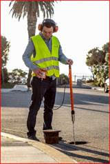

Geofono AquaPhon A150
Geófono profesional diseñado para la detección electroacústica de fugas de agua en redes presurizadas.
Aquaphon A150 – Geófono profesional para detección de fugas de agua
El Aquaphon A150 es un geófono profesional diseñado para la detección electroacústica de fugas de agua en redes presurizadas. Aproximadamente el 90% de las fugas generan ruido detectable en las tuberías, lo que permite localizar con precisión el punto exacto de la pérdida.
El proceso de localización se realiza en dos fases. Primero se utiliza una varilla de escucha para inspeccionar accesorios de la red como válvulas, hidrantes o medidores y determinar el área donde se encuentra la fuga. Posteriormente se utiliza un micrófono de suelo para escuchar desde la superficie y localizar con mayor precisión el punto de rotura.
El sistema incorpora micrófonos de alta sensibilidad desarrollados por Sewerin, capaces de detectar tanto frecuencias bajas en tuberías plásticas como frecuencias altas en tuberías metálicas, lo que permite obtener resultados fiables incluso en entornos con ruido ambiental.
La unidad central es compacta, ligera y fácil de usar. Incorpora tecnología de comunicación digital SDR que permite trabajar con auriculares inalámbricos, facilitando la movilidad del operador durante las inspecciones.
El equipo dispone de una pantalla retroiluminada que muestra el nivel de ruido actual y los dos registros anteriores en formato numérico y gráfico. La pantalla gira automáticamente 180° para garantizar una lectura cómoda en cualquier posición.
Características técnicas principales
- Detección electroacústica profesional de fugas de agua
- Dimensiones: 115 × 65 × 114 mm
- Peso aproximado: 0,4 kg
- Protección: IP65
- Batería de iones de litio integrada
- Autonomía superior a 20 horas
- Tiempo de recarga inferior a 6 horas
- Rango de frecuencia: 1 – 10.000 Hz
- Filtros de frecuencia ajustables
- Pantalla retroiluminada con rotación automática
- Comunicación inalámbrica SDR
- Sistema de protección auditiva
Imágenes del producto

Videos de funcionamiento
Documentación
Descargar la ficha técnica completa del instrumento.
Descargar ficha técnica (PDF)